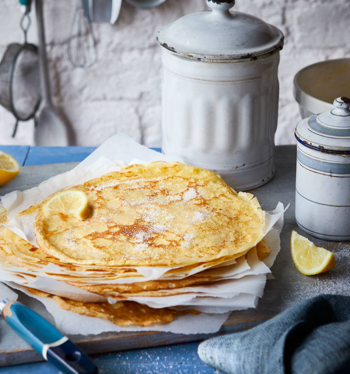

Easy Pancakes

These are ones I made earlier!
Learn a skill for life with our foolproof easy crêpe recipe
that ensures perfect pancakes every time – elaborate flip optional
Ingredients
- Egg
- Flour
- Milk
- Sunflower or Vegetable Oil
Steps
- Put 100g plain flour, 2 large eggs, 300ml milk, 1 tbsp sunflower
or vegetable oil and a pinch of salt into a bowl or large jug, then
whisk to a smooth batter.
- Set aside for 30 mins to rest if you have time, or start cooking
straight away.
- Set a medium frying pan or crêpe pan over a medium heat and carefully
wipe it with some oiled kitchen paper.
- When hot, cook your pancakes for 1 min on each side until golden, keeping
them warm in a low oven as you go.
- Serve with lemon wedges and caster sugar, or your favourite filling.